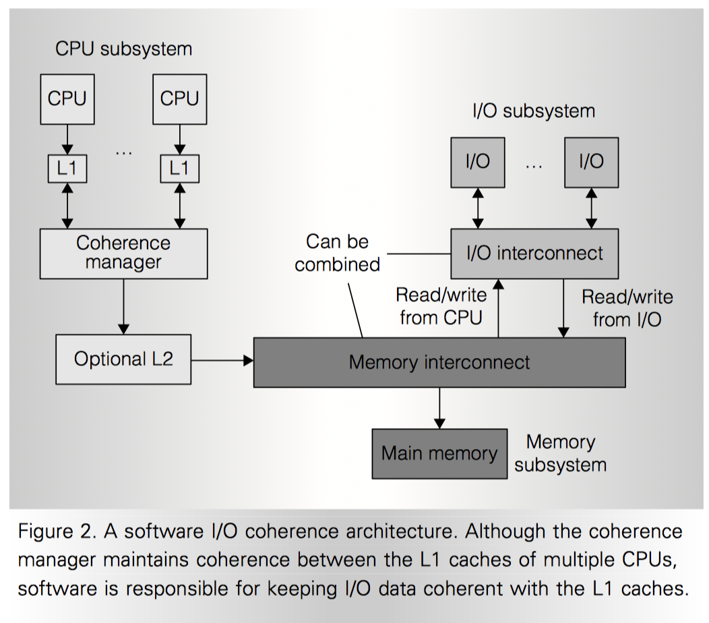
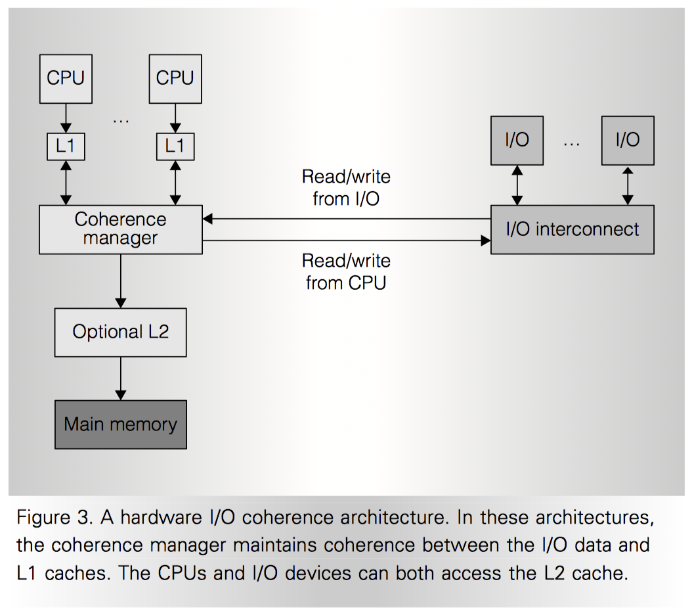

IO Coherence
Cache coherence between CPUs are most explained in textbooks, but IO coherence is not well understood. Recently I’m involved in architecture discussion about IO coherence, and found this paper, “Maintaining I/O Data Coherence in Embedded Multicore Systems” by Thomas B. Berg 2009, very useful coming to explain what is IO coherence and how to implement it in embedded system.
I/O Coherence
Producer-consumer model
Most mechanisms for passing data between IO device and CPU, either CPU -> IO or IO -> CPU, use the classic producer-cosumer model.
What?
- Producer writes data to memory
- Producer sets a flag to notify consumer
- Write memory or raise interrupt
- Consumer recognizes the flag
- Pull memory or serve interrupt
- Consumer read data from memroy
How?
- Consistency
- WAW: consumer observes write of data and write of flag in correct order
- Coherency
- RAW: cosumer read must get correct/latest data from producer
Therefore
**IO = consistency & coherency of data passed between IO device and CPUs
Software IO Coherence

CPU -> IO
How?
- CPU writes data to memory (cached)
- [CRITICAL] CPU makes that data visible to IO device
- Use uncached or write-through memory type
- More traffic (need hardware support for write-gathering)
- Flush cache then fence (memory synchronization)
- Hard to manage between multiple CPU cores. (e.g. OS managed process may migrate from one core to another and leave residual in both L1 cache)
- Use uncached or write-through memory type
- CPU sets a flag
- IO device regonizes that flag
- IO device reads the data from memory
IO -> CPU
- The process is almost the same
- Because the IO device is lack of intelligence, so CPU has to guarantee that “data has arrived to memory before it reads”
- Tricks: CPU can send a read register command to device, if device follows the PCI ordering rules, it will guarantee that read is finished after write reaches its destination.
Hardware IO Coherence

As shown in the figure above, IO coherence is achieved by hardware “coherence manager” that manges accesses from both CPU and IO device. Since hardware manages the coherency, there will be software overhead.
However, if there is last-level cache, (optional L2 in the above figure), avoid polluting that cache is an issue. Large amount of IO data will crowd out existing cache lines. By marking non-shared IO data to bypass cache, we can solve this issue.
Impovement
Use scratchpad on-chip memory instead of DRAM
- Software managed approach
- Use high speed on-chip SRAM as scratchpad to store data will increase the bandwidth dramatically.
Hybrid architecture
- Use IOMMU to combine software / sratchpad / hardware all together, and select different method according to different use case
- Software overhead of managing this IOMMU can be significant
- High-bandwidth data that isn’t processed by a core could use a sideband path to memory
- To avoid coherence manager